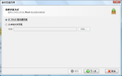
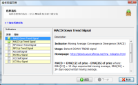
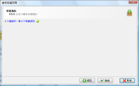
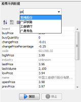
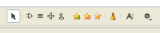

中文
中文 English
English股票指标编辑器
如何开始使用股票指标编辑器？
- 最好的办法开始使用"股票指标编辑器"，是通过我们的预建指标。通过点击"安装"，您就可以安装预建的指标。

- "安装"按钮就在"保存"按钮旁。如果您看不到，请调整面板。

- 选择"从 JStock 服务器安装"， 然后单击"下一步"。 
- 选择你想安装的指标，并点击"下一步"。 我们强烈建议您选择所有指标。 
- 点击"完成"。 
- 你可以测试指标，通过输入一个股票，然后按"模拟"。 
JStock 提供什么组件，以让我创建自己的指标？
您可访问工具栏上的指标组件。 
以下一一列出该组件的功能。
| 组件 | 图标 | 描述 |
| 警报 |  |
每一个由您创建的指标，它必须至少由一个警报组件组成。 |
| 即时股票讯息 |  |
这是今天的实时股票信息。您可以选择 Open Price, Last Price, High Price, Low Price, Typical Price ([High + Low + Last Price] / 3), Volume, Change Price, Change Price in Percentage, Last Volume, 1st/2nd/3rd Buy Price, 1st/2nd/3rd Buy Quantity, 1st/2nd/3rd Sell Price, 1st/2nd/3rd Sell Quantity. |
| 股票历史讯息 |  |
您可以指定特定日期的股票历史讯息。For example, you may specific average stock last price information from 14th June 2005 to 16th December 2006。您可选择 Maximum, Minimum, Average (Simple Moving Average), Mean Deviation, MACD, RSI (Relative Strength Index), EMA (Exponential Moving Average)。您也可以选择 Open Price, Last Price, High Price, Low Price, Typical Price ([High + Low + Last Price] / 3), and Volume. |
| 股票相对历史讯息 |  |
您可以指定特定日期的股票相对历史讯息。For example, you may specific average stock last 14 days price information. You may either choose Maximum, Minimum, Average (Simple Moving Average), Mean Deviation, MACD, RSI (Relative Strength Index), EMA (Exponential Moving Average). You may also choose Open Price, Last Price, High Price, Low Price, Typical Price ([High + Low + Last Price] / 3), and Volume. |
| 常数 |  |
你可以指定任何常数。例如1，10，200，-5。 |
| 算术 |  |
您可执行的算术运算，包括：加/减/乘/除法。 |
| 函数 |  |
您可执行的函数，包括：绝对/平方。 |
| 平等 |  |
您可执行平等/比较运算。这包括：平等/大于/小比/等于或大于/等于或小于。 |
| 逻辑运算 |  |
您可执行下列的逻辑操作。它们包括：OR/ AND。例如，你想要执行
"When today price is lesser than yesterday price OR today volume is lesser than yesterday volume" "When today price is lesser than yesterday price AND today volume is lesser than yesterday volume" |
如何建立指标？
下面是一个例子，向您展示如何构建一个简单的指标， 找出股票“的收盘价是在14天最高”。 First, we will draft out our equation to Real Time Stock's Last Price >= Maximum from 14 days Stock's Last Price From the equation，我们需要以下组件：
- 即时股票讯息
- 股票相对历史讯息
- 平等
- 警报

{kind=link}
{kind=link}
{kind=link}
什么是最好的方式让我能与朋友分享我的指标？
- 用鼠标点击指标名称，并选择"输出...".

- 一个压缩文件将被保存。把压缩文件电邮给您的朋友。
- 您的朋友就能轻易地安装它，通过点击"安装..."，然后选择"从本地文件安装"。
我要如何建立"N 天前的十四天平均走势"？
在"股票相对历史讯息"中，有个 "skipDay" 项目让您输入"N 天前"。您可在 "skipDay" 输入7，表示一个星期前。 
我想要进行"指数平滑异同移动平均线"（MACD）扫描。
我们把 MACD 功能建立在 "Stock relative history information" 及 "Stock history information"。 我们是采用12及26日的 EMA。
- MACD : （12日 EMA - 26日 EMA）
- MACDSignal : MACD 线的 N 日 EMA
- MACDHist : MACD 线 - 讯号线